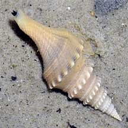
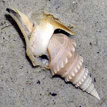
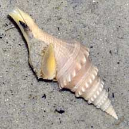

|
|
| shelled snails text index | photo index |
| Phylum Mollusca > Class Gastropoda > Family Turridae |
| Javan
turrid snail Turricula javana Family Turridae updated Sep 2020 Where seen? This elegant snail is sometimes seen on sandy areas near seagrasses on our Northern shores. It is often seen ploughing through the sand with its long muscular foot. The Family Turridae is among the largest of marine snails and members are often difficult to distinguish. Features: 5-7cm. Shell thin, long conical with spiralling ridge of knobs. Front has a pointed tip through which the siphon sticks out. The shell is usually not encrusted, plain pale brown or beige. Operculum thin, flexible, made of a horn-like material, yellowish. Body pale with brownish spots with long muscular foot. Short tentacles, very long siphon which has a black tip. |
|
 Chek Jawa, Sep 10 |
 Chek Jawa, Sep 10 |
 Chek Jawa, Sep 10 |
| Javan turrid snails on Singapore shores |
On wildsingapore
flickr
|
| Other sightings on Singapore shores |
| Acknowlegement With grateful thanks to Tan Siong Kiat of the Raffles Museum of Biodiversity Research for identifying this snail. Links
References
|